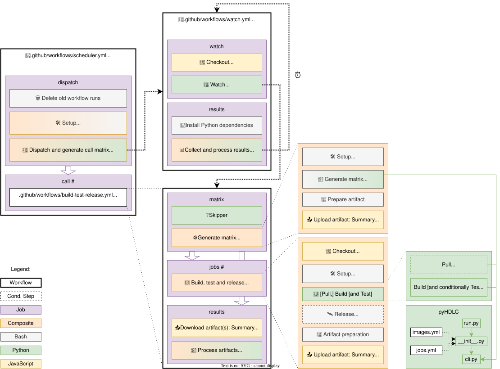

Continuous Integration (CI)¶
Note
At the moment, there is no triggering mechanism set up between different GitHub repositories. All the workflows in this repo are triggered by push events, CRON jobs, or manually.
Status¶


Structure¶
The continuous integration in this repository is based on commands pull and build provided by the Python utils
(see pyHDLC Reference); so, contributors can execute exactly the same commands locally, for
debugging and development.
However, there are several layers of complexity around those commands, in order to precisely decide which images to
build in each workflow/job execution.
{kind=link}

Fig. 12 Structure of the Continuous Integration (CI) in this repository.¶
As shown in Fig. 12, the following wrappers are used:
Tip
In pyTooling/Actions: Context, details about Action and Workflow kinds supported in GitHub Actions are explained. See also Workflow syntax for GitHub Actions.
build-test-release is a local Composite Action with three steps, including setup, pulling/building/testing and releasing.
.build-test-release is a Reusable and Dispatchable Workflow with two jobs. The first job, named matrix, uses
pyHDLC jobsto generate a list of tasks to be used in the second job, named jobs (see docs.github.com: Workflow syntax for GitHub Actions » jobs.<job_id>.outputs). Then, the Composite Action is used in each of the dynamically generated jobs.trigger.sh is a shell script to trigger the dispatchable workflow using the REST API endpoint.
Workflows for each tool or group are triggered through scheduled (CRON) events, by pushes, by Pull Requests or manually. Those which need to use the reusable-dispatchable workflow once only can do so through the trigger script. If the reusable-dispatchable workflow needs to be used more than once sequentially, the workflow call syntax is used. In the most complex workflows, for which the reusable-dispatchable workflow is lacking flexibility, the composite action is used directly.
Since most of the complexity of the orchestration is defined in the YAML configuration file used by pyHDLC, reading YAML Configuration Files is strongly recommended. As shown in Fig. 12, data from the configuration file is used in the reusable-dispatchable workflow and in the build step of the composite action.